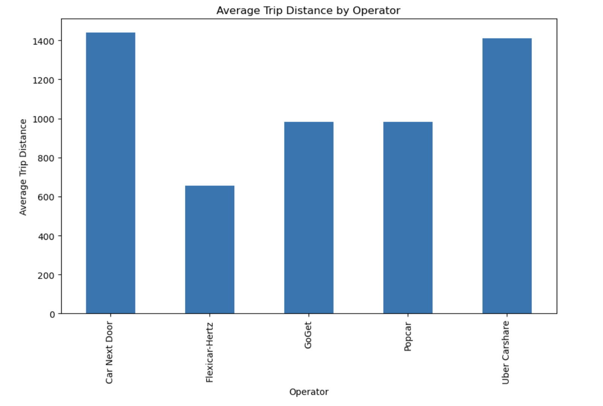
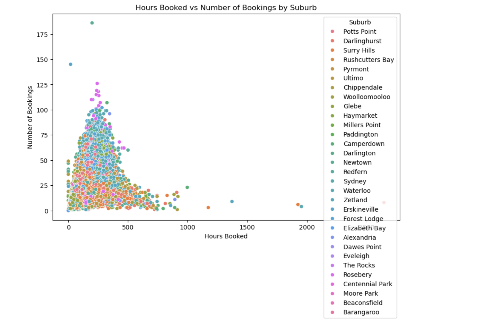
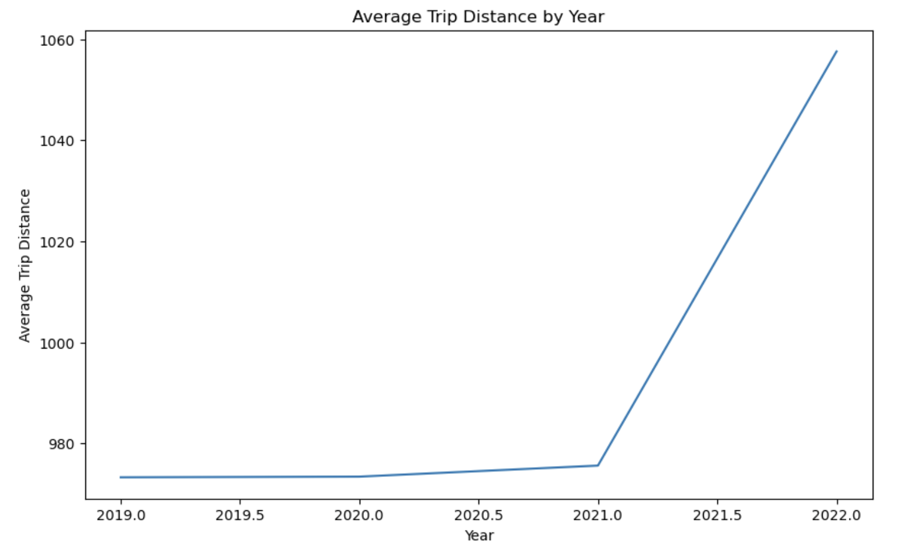

The two suburbs which followed the shortest commutes had the longest travel distances in the entire study; Surry Hills with 6 million and Darlinghurst at 4 million. This finds other suburbs such as Redfern and Pyrmont making a moderate contribution and other areas exhibiting considerably shorter average trip distance.
The graph shows that the average trip distance by operator regarding Car Next Door and Uber Carshare is much higher than 1,400. Here Popcar and GoGet travelling nearly 1,000 and Flexicar-Hertz at 700, which include all the pick-ups and drop-offs.
The qualitative relationship indicated on the scatter plot shows that as hours booked increases, so does the trip distance; most of the points lie within a range of less than 500 hours and 3000 distance. Outliers are an identification of extra bookings and trips, which points out variation in booking occurrence.
The figure on scatter relatively indicates the hours booked against the number of bookings, most of the points are below the 500 hours 50 bookings. Most of the top suburbs are mainly Concentrated in the Inner City suburbs like Surry Hills and Darlinghurst, while other dot show even less but very High Intensity of Booking within few suburbs.
Presenting the data as a chart, the number of bookings is reflective of the month’s average: December booked about 29. Scatter graph of three groups of students shows that their average monthly marks are higher in August, September, February and October but comparatively low in April and June. On balance, there is fairly constant demand and the main travel high season falls in December.
The latter is depicted in the yearly average trips distance represented by approximately 980 until 2020 with a small increase in the first half of 2021. Rising to 2022, the figure surges considerably to reach above 1060, which may be as a result of shifting lifestyle, trends or preferences.
